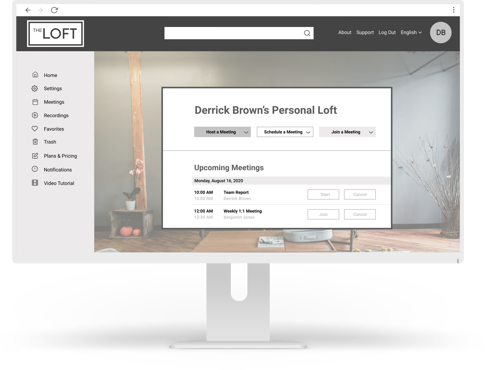
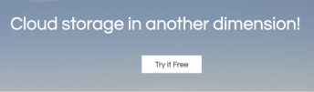
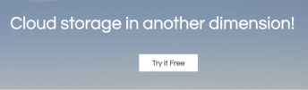

The Loft
 Visit PrototypeProject Background:
The cloud storage industry is booming along with the increasing need to collaborate and work remotely. Connect is a new innovative cloud platform well suited for storing and sharing data from anywhere in the world.
Objective:
Creating a desktop site where files can be stored, shared, and accessed anytime, from anywhere.
My Role:
UX Researcher, UX Designer
Project Duration:
4 weeks
Tools:
Figma, Google Forms, Google Sheets


 
